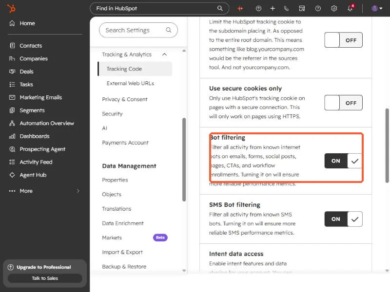
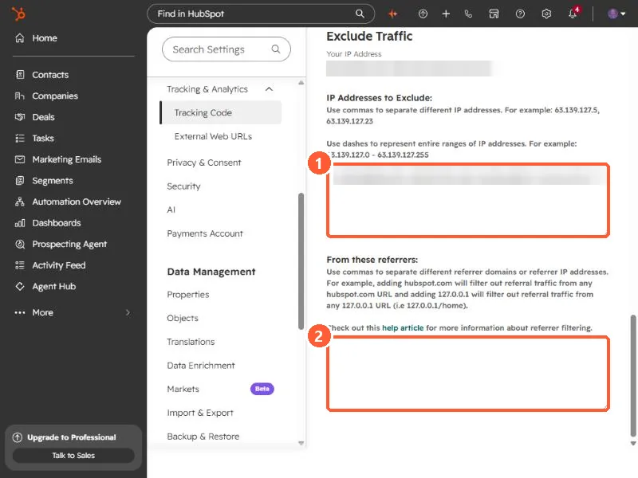

Short answer
Open Settings, Tracking & Analytics, Tracking Code, then the Advanced Tracking tab. At the bottom, add your IPv4 and IPv6 addresses to IP Addresses to Exclude. HubSpot then stops recording visits, page views, submissions, and events from them. It does not remove traffic already recorded, and there is no API for the setting, so do it in the UI.
1. Open Advanced Tracking
Go to Tracking & Analytics settings and click the Advanced Tracking tab. Scroll past the additional domains and the cookie settings. Two filters near the end are worth knowing even if you never touch them.


2. Add your IP addresses
At the bottom of the tab is Exclude Traffic. HubSpot shows your current IP address above the box. Paste your addresses into IP Addresses to Exclude, separated by commas. HubSpot accepts both IPv4 and IPv6, and a dash for a range. The filter below it takes referrer domains or IPs to leave out of referral traffic. My addresses are blurred below.


Add both IPv4 and IPv6, since a connection can use either.
3. What this does and does not do
- After you add an IP, HubSpot records no visits, page views, submissions, or events from it.
- It only stops future traffic. Visits already recorded stay in your reports.
- Home and mobile IPs change. A filter set once can quietly stop working, so recheck it when your numbers look off.
- The visits from excluded IPs are still shown in the website visits tool.
HubSpot marks form submissions from an excluded IP with the spam type Excluded source. If you test your own form from an excluded network, it will not arrive as a normal submission. Test from another network, or temporarily remove the filter.
4. Why this has to be done in the UI
I tried to make this change through the CLI, the MCP connector, and the API. HubSpot has no endpoint for the analytics IP filter, so it is only settable on this page.